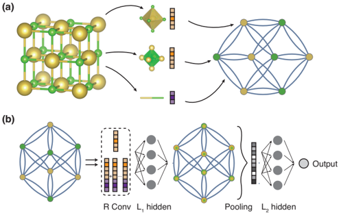
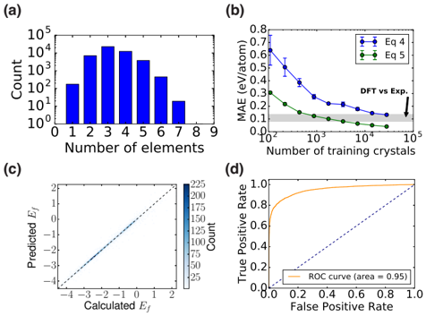
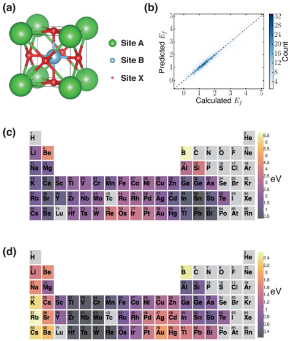
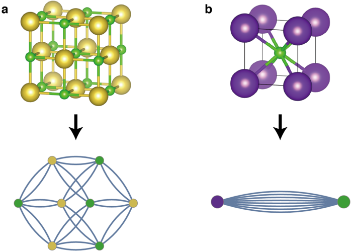
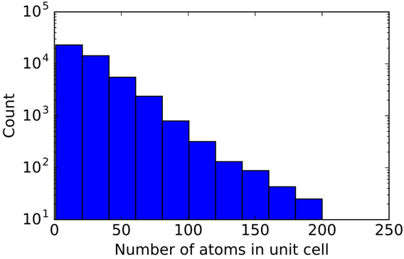
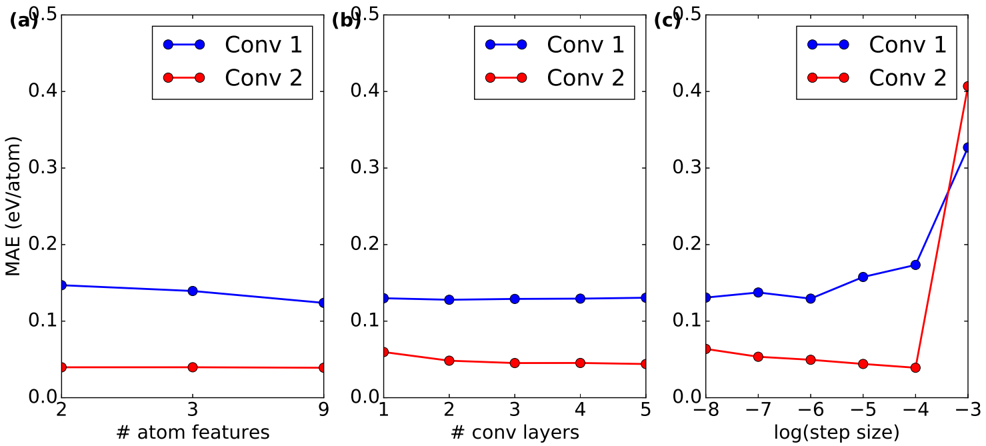
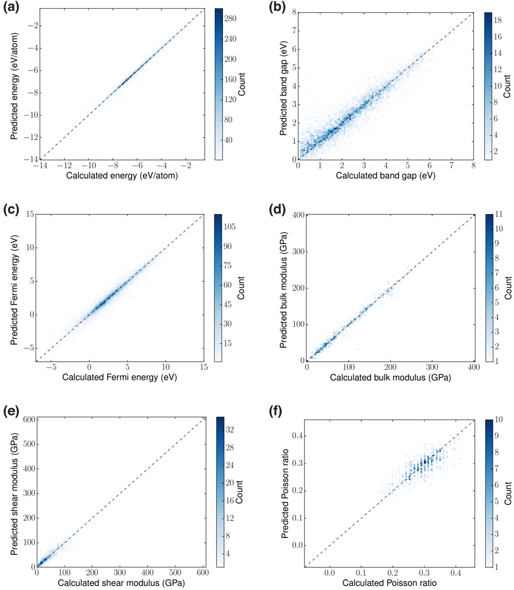
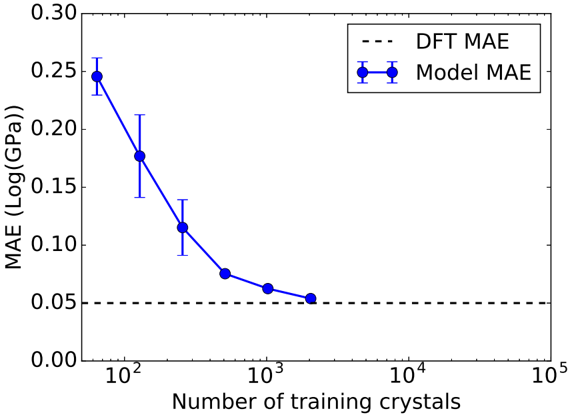
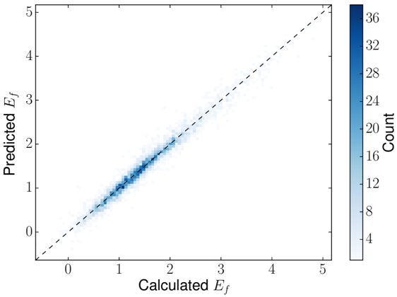

Autores: Tian Xie, Jeffrey C. Grossman (MIT)
Revista: Phys. Rev. Lett. 120, 145301 (2018)
arXiv: 1710.10324
Idea central
Primer framework universal e interpretable para predecir propiedades de cristales con DL. Representa el cristal como un grafo (átomos = nodos, enlaces = aristas) y aplica convoluciones de grafo para aprender directamente del entorno químico local — sin descriptores hand-crafted.
Cómo funciona
1. Construcción del crystal graph
- Nodos = átomos en la celda unidad.
- Aristas = vecinos dentro de un radio de corte (multigrafo: pueden existir múltiples aristas entre los mismos nodos por imágenes periódicas).
- Feature de nodo: propiedades elementales del átomo (electronegatividad, radio, grupo, etc.) one-hot encoded.
- Feature de arista: distancia interatómica codificada con Gaussian basis.
2. Capas de convolución
Para cada nodo i, en cada capa l:
v_i^(l+1) = v_i^(l) + Σ_{j,k} σ(z_{i,j,k} W_f + b_f) ⊙ g(z_{i,j,k} W_s + b_s)
donde z_{i,j,k} = concatenación de (v_i, v_j, u_{i,j,k}).
R capas → cada átomo "ve" su entorno hasta R vecinos.
3. Pooling
Suma normalizada sobre nodos → vector global del cristal v_c.
4. Heads MLP
L1, L2 capas fully-connected → propiedad target (energía de formación, bandgap, módulo elástico, etc.).
Resultados
Predice 8 propiedades distintas de Materials Project con precisión cercana a DFT vs experimento:
- Energía de formación
- Bandgap
- Módulos elásticos (bulk, shear)
- Permitividad dieléctrica
- Coeficiente de Poisson
- Fermi level
- etc.
Con sólo ~10⁴ datapoints ya alcanza error comparable al de DFT.
Interpretabilidad
CGCNN puede extraer contribuciones de entornos locales a la propiedad global. Aplicado a perovskitas, los autores recuperan reglas empíricas conocidas de estabilidad y reducen el espacio de búsqueda en high-throughput screening.
Aportes clave
- Representación universal del cristal (cualquier estructura, cualquier composición).
- Sin feature engineering manual — solo propiedades atómicas básicas.
- Interpretable — descompone la predicción global en contribuciones locales.
- Establece la plantilla GNN para materiales que dominó la literatura siguiente.
Conexiones
- Punto de partida obligatorio en toda revisión moderna de GNNs para materiales — [[Review_DL_materiales_Choudhary_2022]] lo menciona como pivote.
- Precede a SchNet, MEGNet, iCGCNN, ALIGNN, DimeNet…
- Filosofía opuesta a [[CNN3D_constantes_elasticas_nanoporosos_Zorkaltsev_2025]]: GNN vs CNN volumétrica.
- Tu pipeline con DGCNN sobre defectos comparte herramientas (PyG, grafo dinámico) pero CGCNN trabaja en grafo estático periódico.
Figuras del Paper (9)

FIG. 1. Illustration of the crystal graph convolutional neural network (CGCNN). (a) Construction of the crystal graph. Crystals are converted to graphs with nodes representing atoms in the unit cell and edges representing atom connections. Nodes and edges are characterized by vectors corresponding to the atoms and bonds in the crystal, respectively. (b) Structure of the convolutional neural network on top of the crystal graph. R convolutional layers and L 1 hidden layers are built on top of each node, resulting in a new graph with each node representing the local environment of each atom. After pooling, a vector representing the entire crystal is connected to L 2 hidden layers, followed by the output layer to provide the prediction.
FIG. 1. Illustration of the crystal graph convolutional neural network (CGCNN). (a) Construction of the crystal graph. Crystals are converted to graphs with nodes representing atoms in the unit cell and edges representing atom connections. Nodes and edges are characterized by vectors corresponding to the atoms and bonds in the crystal, respectively. (b) Structure of the convolutional neural network on top of the crystal graph. R convolutional layers and L 1 hidden layers are built on top of each node, resulting in a new graph with each node representing the local environment of each atom. After pooling, a vector representing the entire crystal is connected to L 2 hidden layers, followed by the output layer to provide the prediction.

FIG. 2. The performance of CGCNN on the Materials Project database[11]. (a) Histogram representing the distribution of the number of elements in each crystal. (b) Mean absolute error (MAE) as a function of training crystals for predicting formation energy per atom using different convolution functions. The shaded area denotes the MAE of DFT calculation compared with experiments[18]. (c) 2D histogram representing the predicted formation per atom against DFT calculated value. (d) Receiver operating characteristic (ROC) curve visualizing the result of metal-semiconductor classification. It plots the proportion of correctly identified metals (true positive rate) against the proportion of wrongly identified semiconductors (false positive rate) under different thresholds.
FIG. 2. The performance of CGCNN on the Materials Project database[11]. (a) Histogram representing the distribution of the number of elements in each crystal. (b) Mean absolute error (MAE) as a function of training crystals for predicting formation energy per atom using different convolution functions. The shaded area denotes the MAE of DFT calculation compared with experiments[18]. (c) 2D histogram representing the predicted formation per atom against DFT calculated value. (d) Receiver operating characteristic (ROC) curve visualizing the result of metal-semiconductor classification. It plots the proportion of correctly identified metals (true positive rate) against the proportion of wrongly identified semiconductors (false positive rate) under different thresholds.

FIG. 3. Extraction of site energy of perovskites from total energy above hull. (a) Structure of perovskites. (b) 2D histogram representing the predicted total formation against DFT calculated value. (c, d) Periodic table with the color of each element representing the mean of the site energy when the element occupies A site (c) or B site (d).
FIG. 3. Extraction of site energy of perovskites from total energy above hull. (a) Structure of perovskites. (b) 2D histogram representing the predicted total formation against DFT calculated value. (c, d) Periodic table with the color of each element representing the mean of the site energy when the element occupies A site (c) or B site (d).

FIG. S1. The crystal structures and crystal graphs of NaCl (a) and KCl (b).
FIG. S1. The crystal structures and crystal graphs of NaCl (a) and KCl (b).

FIG. S2. Histogram representing the distribution of the number of atoms in the primitive cells.
FIG. S2. Histogram representing the distribution of the number of atoms in the primitive cells.

FIG. S3. The effect of different hyperparameters on the validation mean absolute errors (MAEs). The blue points denotes models using convolution function Eq. 4, and the red points denotes models using Eq. 5. (a) Number of atom features. The 2 features include group number and period number, the 3 features additionally include electronegativity, and the 9 features include all properties in Table II. (b) Number of convolutional layers. (c) Logarithm of the step size.
FIG. S3. The effect of different hyperparameters on the validation mean absolute errors (MAEs). The blue points denotes models using convolution function Eq. 4, and the red points denotes models using Eq. 5. (a) Number of atom features. The 2 features include group number and period number, the 3 features additionally include electronegativity, and the 9 features include all properties in Table II. (b) Number of convolutional layers. (c) Logarithm of the step size.

FIG. S4. 2D histogram visualizing the predictive performance of six properties. (a) Total energy per atom. (b) Band gap. (c) Fermi energy. (d) Bulk moduli. (e) Shear moduli. (e) Poisson ratio.
FIG. S4. 2D histogram visualizing the predictive performance of six properties. (a) Total energy per atom. (b) Band gap. (c) Fermi energy. (d) Bulk moduli. (e) Shear moduli. (e) Poisson ratio.

FIG. S5. The MAE of predicted bulk modulus with respect to DFT values against the number of training crystals. The dashed line shows the MAE of DFT calculations with respect to experimental results [S24], which is 0.050 Log(GPa).
FIG. S5. The MAE of predicted bulk modulus with respect to DFT values against the number of training crystals. The dashed line shows the MAE of DFT calculations with respect to experimental results [S24], which is 0.050 Log(GPa).

FIG. S6. 2D histogram visualizing the performance of predicting formation energy of perovskites using a full pooling layer with Eq. 4 as the convolution function.
FIG. S6. 2D histogram visualizing the performance of predicting formation energy of perovskites using a full pooling layer with Eq. 4 as the convolution function.